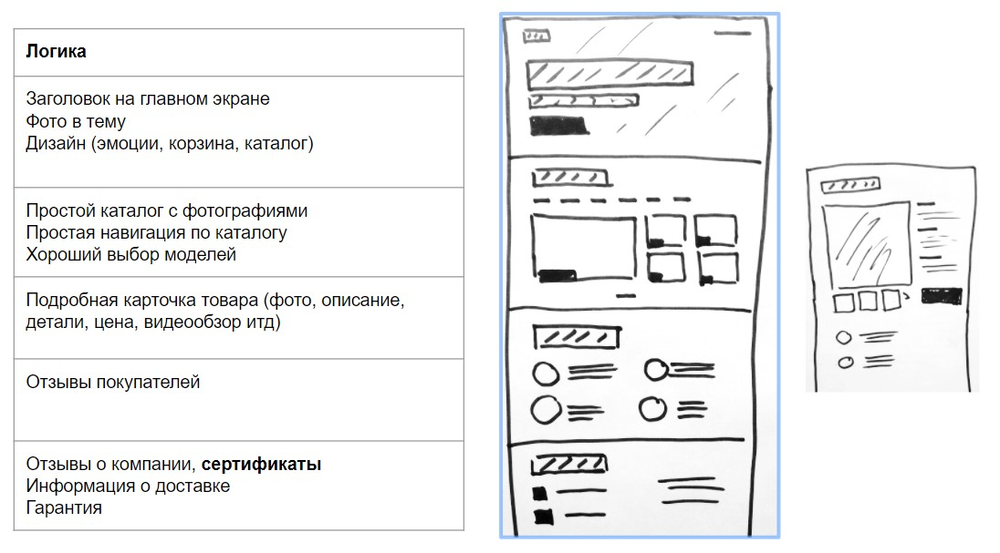
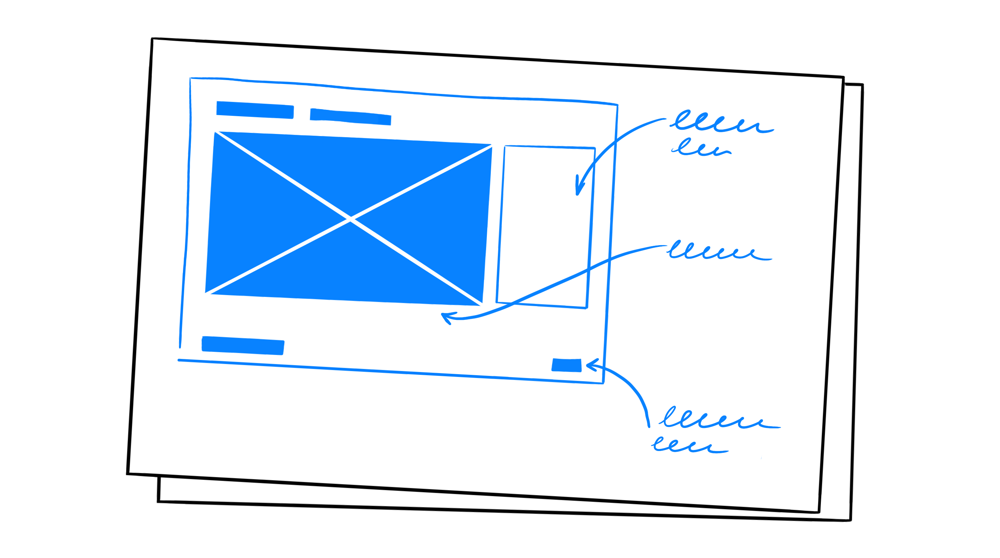

Прототип


UX-дизайн (User Experience)
Опыт пользователей (по сути это создание продуманного прототипа сайта для удобства пользователя), проектирование интерфейса, логика сайта, продумывание каждого шага пользователя, карта сайта, акценты в блоках для заинтересованности пользователя, последовательность блоков, путь пользователя при использовании сайта.
Рекомендации
- Эскиз разрабатываемого сайта, который составляется вместе с ТЗ, либо после него. На его основе далее разрабатывается основной макет сайта.
- Прототип состоит из блоков, нужно определить�ся какие блоки и сколько их будет на каждой странице.
- Уже на этапе прототипа нужно думать об общей сетки страницы (1-кол, 2- кол, 3-кол).
- В протипе уже должна быть заложена общая композиция каждого блока страницы
- Композиция в идеале должна разрабатываться уже с учетом выбранной дизайн-концепции
- Сперва советуем вам построить прототип на бумаге / в уме, а затем уже в соответствующих программах или онлайн-сервисах.
- “Проще использовать ластик на редакционной доске, чем кувалду на строительной площадке” (Френк Ллойд Райт)
- Блоки в идеале не должны быть сильно высокими, чтобы пользователь мог видеть видимый разрыв между ними (до 700-850px для full-hd)
- Расположение элементов на прототипе может отличаться от расположения на готовом дизайне, главным является их наличие.
Главный экран
Главный экран - верхний блок главной страницы это лицо сайта. Должен отражать �основную суть сайта и отвечать на вопросы: "Куда я попал? Что это за сайт? Что здесь предлагают?" Правило 5 секунд
Оформление главного экрана создаёт общий тон в дальнейшей разработке дизайна сайта. С него начинается макет и задаётся общая дизайн-концепция. САМАЯ ОТВЕТСТВЕННАЯ ЧАСТЬ!!!
Не стоит размещать слишком много информации на главном экране, не перегружайте пользователя; стоит понимать, что больше, не значит качественнее;
Используйте хорошо продуманный контент (качественные фотографии, грамотные заголовки, емкие подзаголовки, нужные кнопки и понятное меню).
Можно предлагать заказчику 2 и более вариантов главного экрана, когда нет четкого педставления в понимании дизайн-концепции, чтобы он мог сделать выбор уже по готовому дизайну. (как вариант шрифт с засечками - без засечек, монохром - цветной, минимализм - загруженный).
Начинать разработку дизайна нужно именно с главного экрана, чтобы начала вырисовываться основная концепция и потом отталкиваться в дальнейшей разработке от этого главного экрана.
- Изображение (тематическое, дожно вызывать эмоции, должен быть акцент). Может быть:
- Оверлейным (текст поверх всего изображения, при этом само изображение либо затемняется, либо засветляется)
- Фоновым с акцентной областью, которая не перекрывается тексом (без затемнения или осветления)
- Отдельно-стоящим (вырезанным или прямоугольным)
- Декоративные вставки или текстура
- Зaголовок (должен быть акцент). Он не должен быть очень длинным (1-5 слов). От 40 до 100px.
- Подзаголовок (optional)
- Текст ознакомления (это буквально 2-3 предложения, которые максимально коротко и лаконично описывают то, чем занимается компания, или для чего создан данный сайт. От 16 до 24px)
- Кнопка призыва к дейсвию (Call to action)
- Шапка сайта с меню
- Форма заявки или расчета (optional)
- Контактные данные (optional)
- Главный экан может быть со слайдером
Типичные блоки и их названия
Базовые элементы
-
Header
- Логотип (размещать всегда слева, имеет акцент)
- Поиск
- Бургер
- Меню сайта или ссылки для блоков
- Призыв к действию (Кнопка формы, номер телефона, email, размещать лучше справа)
-
Menu или Sidebar
Внутри хэдера или отдельно (Ссылки должны быть по акценту на последнем месте после логотипа и кнопки, лучше их делать меньшим кеглем, нежирным прописным начертанием)
-
Контентная часть (Основная информация)
-
Footer (как правило имеет более тёмное оформление)
- Ссылки на соц. сети
- Копирайт
- Лого
- Соц сети
- Шаринг
- Контакты
-
Модальные окна
Блоки
- Главный экран (Презентационный блок, обычно идет после шапки на главной странице и должен вкраце пояснять кто мы и что мы умеем)
- Блок преимуществ (почему нужно обращаться именно к нам, бонусы)
- Наши технологии
- Портфолио (наши работы, слайдер или галерея)
- Контакты (как с нами связаться, где мы находимся, график работы)
- О нас (немного слов о компании)
- Наша команда (немного слов о людях)
- Услуги (что мы умеем)
- Расчет стоимости
- Акция, скидки, спец. предложения
- Галерея (часто в виде слайдера или плитки)
- Отзывы (как правило, в конце страницы, лучше видео)
- Католог
- Карточка товара
- Цены
- Форма заявки
Состав блока
- Заголовок
- Подзаголовок
- Описание
- Фоновое изображение
- Видеофон
- Картинка
- Кнопка
- Иконки
- Ссылки
- Внутренние подблоки
- Элементы анимаций
- Поисковое поле
- Форма, элементы формы
Типичные страницы
Название может дублироваться с названиями блоков.
- Главная страница (главный экран, лицо сайта, должно цеплять и выглядеть интересно)
- Каталог
- Услуги
- О нас
- Контакты
- Портфолио (наши работы)
- Команда (наши работники)
- Наши награды
- Личный кабинет (страница профиля)
- Корзина (покупки)
- Оплата
- Отзывы
- Фото-, видеогалерея
- Наши технологии
- Стоимость, цены
- Форма заявки
КОПИРАЙТИНГ
Основные принципы информационного стиля (Инфостиля)
- Максимум ИНФОРМАТИВНОСТИ, минимум "воды"
- Текст должен быть ИНТЕРЕСНЫЙ, нешаблонный. Должно быть интересно читать пользователям
- Должен быть честный. Никакого самовосхваления и самолюбия
- Должен передавать СУТЬ
- Качественные прилагательные неэффективны (Дорогой китайский шёлк)
- Не должно быть слов-УСИЛИТЕЛЕЙ (реально, честно, на самом деле, без обмана и т.д.)
- Паразиты времени (В наши дни, сейчас, в настоящий момент и т.д.) УБРАТЬ, всё и так происходит сейчас
- Если заказчик может предоставить все тексты уже на этапе проектирования, то используйте их - это поможет вам сразу расставить все текстовые блоки на свои места.
Полезное
- glvrd.ru — новый сайт
- retro.glvrd.ru - старый сайт
- yandex.ru/referats - рыбный текст
- fish-text.ru - ещё рыбный текст
- книга Пиши, сокращай (полезная инфа по копирайтингу)